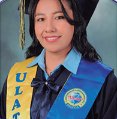

UNIVERSIDAD LATINOAMERICANA ULAT✦
UN NUEVO CAPÍTULO COMIENZA

Con mucha alegría, te invito a celebrar
Paola García
Olguin
✦
el logro de una meta y el comienzo de nuevos sueños.
ACTO DE GRADUACIÓN
FECHA Y HORASábado, 24 de octubre de 202614:30 h
LUGARAuditorio “U.E. LATINOAMERICANA”Av. Rubén Ferrufino, zona Saca Saca
ACOMPAÑANOS
Tu presencia hará este día aún más especial.
Cargando tu invitación…
Esta es una invitación general. Para confirmar asistencia, solicita tu enlace personal a la anfitriona.
✧
Y después… ¡sigamos celebrando!
Los detalles de la celebración posterior se comunicarán más adelante.